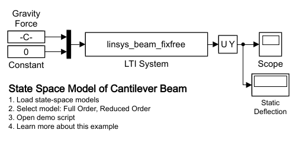

State-Space Model of Cantilever Beam
This example shows the use of a state-space model to calculate the deflection of a cantilever beam. This model assumes the beam has one fixed end, one free-end, and is subjected to a distributed load (gravity).
The second input to the state-space model is the force applied to the tip of the beam. When the force is set to zero, the simulation can be used to measure the static deflection of the beam. The state-space models (full and reduced order) produce results that match the theoretical result (-0.669 m) quite closely
Contents
Model
Static Deflection Test: Full Order State-Space Model
Static Deflection is -0.67141 m
Static Deflection Test: Reduced Order State-Space Model
Static Deflection is -0.67119 m